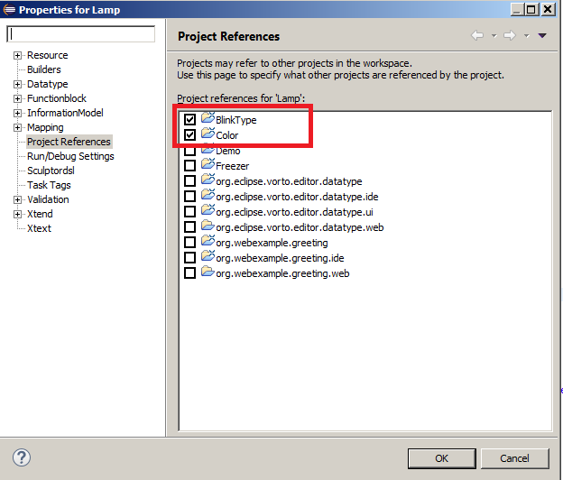

Migration Guide
Vorto 0.1.x to 0.4.x
This migration guide describes how to migrate projects created with Vorto version 0.1.x to 0.4.x. This document doesn’t describes about installation. For installation, please follow standard eclipse update manager.
Function Block Project migration
For example if function block “Lamp” project that was created in Vorto 0.1.x can be imported/used into Vorto 0.4.x workspace, however following are the list of changes needs to be done.
- Vendor to namespace
- Convention of nampespace
- Namespace, Version positioning
- Separation of Entity, enum sections into separate project
- Entity and enum references in functionblock project
Vendor to namespace
In Vorto 0.4.x the “vendor” keyword is replaced by “namespace” keyword in Vorto 0.4.x version.
| Vorto 0.1.x | Vorto 0.4.x |
|---|---|
|
functionblock Lamp { ... vendor www.bosch.com ... ... } |
namespace www.bosch.com { functionblock Lamp {
... ... ... ... } |
Convention of namespace value
In Vorto 0.4.x the “namespace” value follows new convention which is of Java package structure like “com.bosch.fb” instead of existing url type “www.bosch.com”. However the existing url convention is still valid.
| Vorto 0.1.x | Vorto 0.4.x |
|---|---|
|
functionblock Lamp { ... vendor www.bosch.com ... ... } |
namespace com.bosch.fb { functionblock Lamp {
... ... ... ... } |
Namespace, Version positioning
In Vorto 0.4.x the “namespace” and “version” statement appears outside the main functionblock block.
| Vorto 0.1.x | Vorto 0.4.x |
|---|---|
|
functionblock Lamp { ... vendor www.bosch.com version 1.0.0 ... ... } |
namespace com.bosch.fb { version 1.0.0 functionblock Lamp {
... ... ... ... } |
Separate project for Entity, Enum types
In Vorto 0.4.x the entity and enum types are separated into defined into separate projects instead of defining within the same function block. The Enum and Entity wizard can help to create new projects respectively.
The entity, enum files will have additional “namespace” and “version” statement in additional to the actual definition.
Vorto 0.1.x (in .fbmodel file in functionblock project) |
Vorto 0.4.x (in .type file in enum project) |
|---|---|
|
functionblock Lamp { ... ... ... ... ... } enum BlinkType { fast, slow } |
namespace com.bosch.type version 1.0.0 enum BlinkType { fast, slow } |
Vorto 0.1.x (in .fbmodel file in functionblock project) |
Vorto 0.4.x (in .type file in entity project) |
|---|---|
|
functionblock Lamp { ... ... ... ... ... } entity Color { mandatory red as string "Red color value" mandatory green as string "Green color value" mandatory blue as string "Blue color value" } |
namespace com.bosch.type version 1.0.0 entity Color { mandatory red as string "Red color value" mandatory green as string "Green color value" mandatory blue as string "Blue color value" } |
Entity and enum references in functionblock project
In Vorto 0.4.x, in order to use the entity and enum types, it needs to be referenced explicitly referred within functionblock by “using” statement. The “using” statement has following convention using «fully qualified entity or enum type with namespace» ; «version of entity or enum type»
e.g using com.bosch.type.BlinkType;1.0.0
Vorto 0.1.x (in .fbmodel file in functionblock project) |
Vorto 0.4.x (in .fbmodel file in functionblock project with references) |
|---|---|
|
functionblock Lamp { ... ... ... ... ... } entity Color { mandatory red as string "Red color value" mandatory green as string "Green color value" mandatory blue as string "Blue color value" } enum BlinkType { fast, slow } |
... ... using com.bosch.type.BlinkType ; 1.0.0 using com.bosch.type.Color ; 1.0.0 functionblock Lamp { ... ... ... ... ... } |
Also, the entity and enum projects should have project references within the functionblock project without errors.
In Lamp Function block properties - > Project References should have all entity and enum projects checked inorder to resolve without errors within workspace.

Here is the full soruce of Lamp functionblock in Vorto 0.1.x migrated to Vorto 0.4.x.
Vorto 0.1.x Lamp.fbmodel
functionblock Lamp {
displayname "Lamp"
description "A lamp makes the environment bright"
vendor www.bosch.com
category demo
version 1.0.0
configuration {
mandatory blinking as boolean "if the lamp is currently blinking or not"
mandatory on as boolean "if the lamp is currently switched on"
mandatory powerConsumption as int "the amount of power the lamp is consuming"
}
fault {
mandatory bulbDefect as boolean "true if the light bulb of the lamp is defect"
}
events {
ToggleEvent {
optional previousState as string
optional currentState as string
}
}
operations {
blink(blinkType as BlinkType) "sets the blinking type for the lamp"
getPowerConsumption() returns int "gets the amount of power being consumed by the lamp"
isOn() returns boolean "checks if the lamp is switched on"
off() "turns the lamp off"
on() "turns the lamp on"
setColor(color as Color) "Set the color of Led"
stopBlinking() "stops the blinking of the lamp"
toggle() "switches the lamp on or off"
toggleWithDelay(delayInSeconds as int) "switches the lamp on or off with a delay of the specified seconds"
}
}
entity Color {
mandatory red as string "Red color value"
mandatory green as string "Green color value"
mandatory blue as string "Blue color value"
}
enum BlinkType {
fast,
slow
}
Vorto 0.4.x Lamp.fbmodel
namespace com.mycompany.fb
version 1.0.0
using www.bosch.com.BlinkType ; 1.0.0
using com.mycompany.type.Color ; 1.0.0
functionblock Lamp {
displayname "Lamp"
description "Function block model for Lamp"
category demo
configuration{
mandatory blinking as boolean "if the lamp is currently blinking or not"
mandatory on as boolean "if the lamp is currently switched on"
mandatory powerConsumption as int "the amount of power the lamp is consuming"
}
status{
mandatory bulbDefect as boolean "true if the light bulb of the lamp is defect"
}
fault{
mandatory bulbDefect as boolean "true if the light bulb of the lamp is defect"
}
operations{
blink(blinkType as BlinkType) "sets the blinking type for the lamp"
getPowerConsumption() returns int "gets the amount of power being consumed by the lamp"
isOn() returns boolean "checks if the lamp is switched on"
off() "turns the lamp off"
on() "turns the lamp on"
setColor(color as Color) "Set the color of Led"
stopBlinking() "stops the blinking of the lamp"
toggle() "switches the lamp on or off"
toggleWithDelay(delayInSeconds as int) "switches the lamp on or off with a delay of the specified seconds"
}
}
Vorto 0.4.x Blinktype.type
namespace com.bosch.type
version 1.0.0
enum BlinkType {
fast,
slow
}
Vorto 0.4.x Color.type
namespace com.bosch.type
version 1.0.0
entity Color {
mandatory red as string "Red color value"
mandatory green as string "Green color value"
mandatory blue as string "Blue color value"
}
Vorto 0.4.x - Information Models
| In Vorto 0.4.x there won't be any code generators menu appear for functionblock projects. Instead the functionblocks are ecnlosed within information models and code generation menu appears only for Information model projects. |